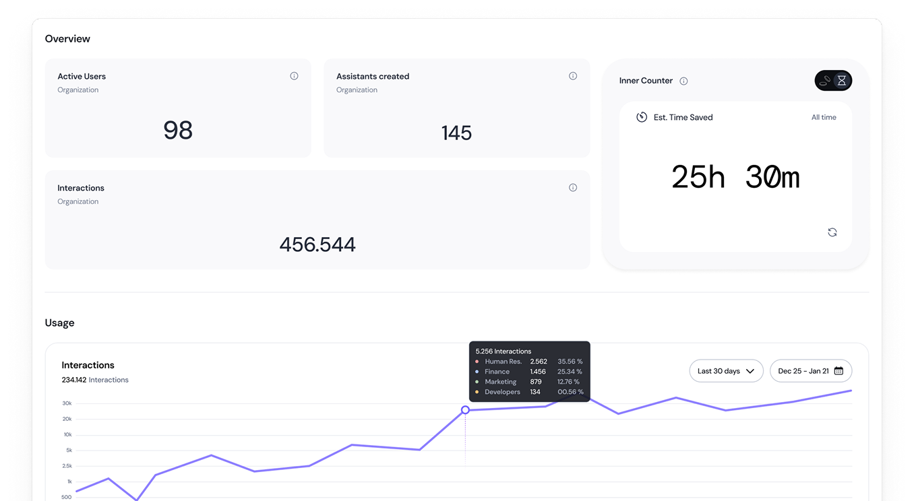
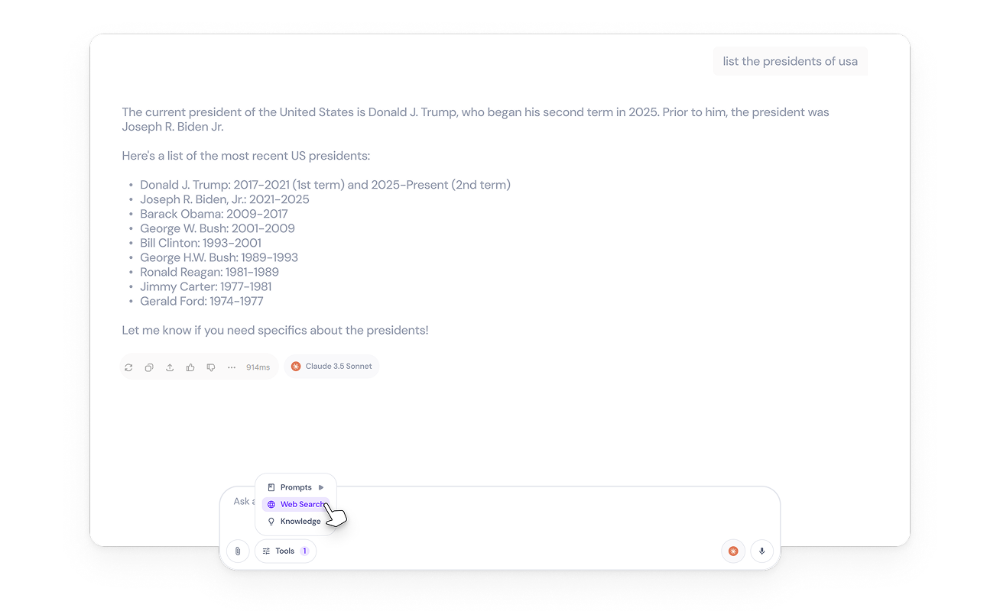

As part of InnerAI’s team, I’ve led design efforts on the company’s AI platform (web and mobile), creating internal processes that ensure quality and performance, spearheading design and documentation in order to improve user engagement and satisfaction, raising conversion rates and serving over +1M users.
The company is a fast growing startup in Brazil with a estimated valuation at approximately R$ 500 million (seed round led by Canary and ONEVC, as well as investments from Vivo Ventures).

Role
UX/Product Designer
Duration
5 months
Team
1 Product Manager
1 QA, 3 Devs
1 Designer
Problem and solution
As every startup, the company suffered from a lack of clear and structured design processes and also lacked internal organization of some design assets. Beyond other things, I created a simple icon library from scratch for the company’s Design System, created documentation process and assets for better organization and dev handoff, and led complex everyday tasks such as creating a B2B management Dashboard serving more than 20 businesses with over 20k seats.
50+
Icons created for the DS
+1M
User impacted
20
Businesses impacted

Miscellaneous
I’ve also played a part in creating a landing page (not focused on conversion or engagement), but as a fun experimentation for the direction of the product, with a sophisticated and clear approach.
Also, find below the design challenge that got me accepted at the company.